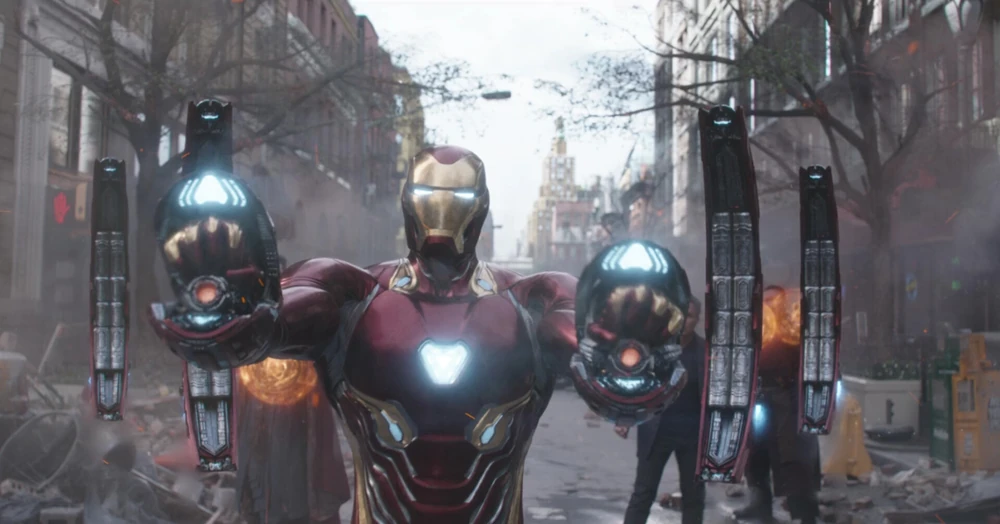
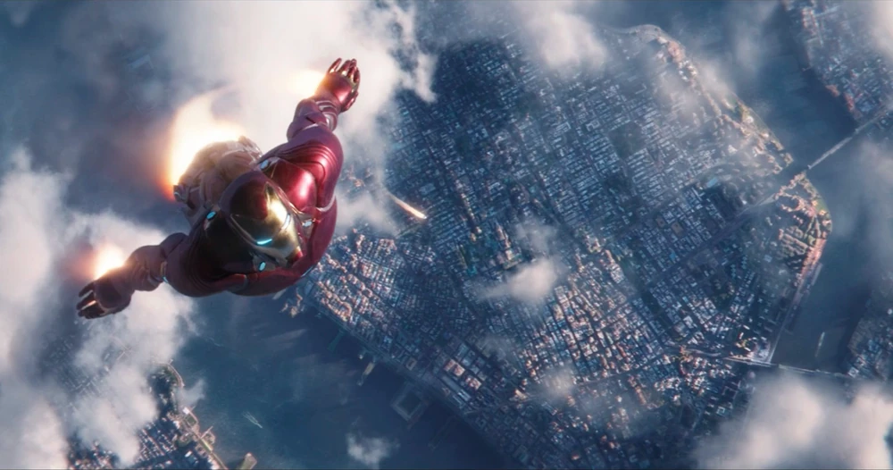
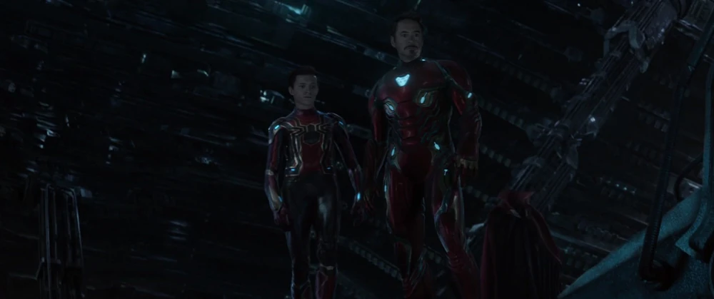
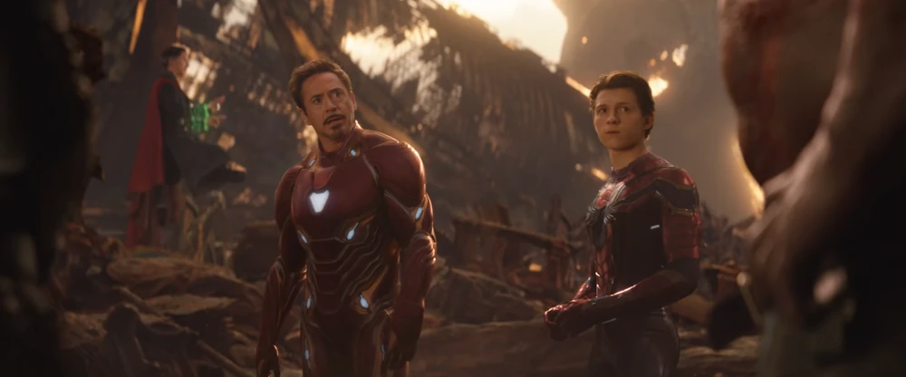
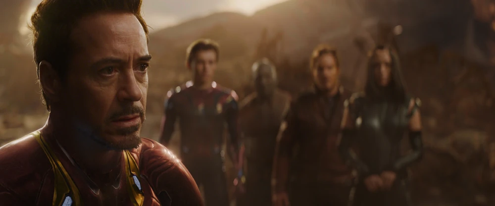
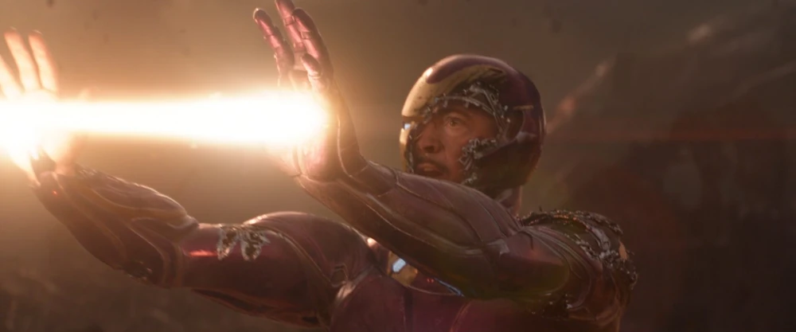

Tony Stark deploys his nanotechnology Mark L armor, clashing with the cosmic conqueror Thanos in a desperate battle on the planet Titan. Despite an ingenious plan with Doctor Strange, Spider-Man, and the Guardians of the Galaxy, Tony is unable to prevent the Snap — watching helplessly as Peter Parker dusts away in his arms.

Greenwich Village Threat
The cosmic threat of Thanos arrives as Ebony Maw's spaceship hovers over Greenwich Village, casting a shadow over Manhattan.

Mark L Nanotech Suit-Up
Tony Stark pulls the drawstrings of his chest housing unit, deploying his first nanotechnology suit, the Mark L, as nanobots cascade over him.

Leipzig Combat / Maw Fight
Iron Man battles the Black Order in the streets of New York, deploying nanotech shields and weapons alongside Doctor Strange and Spider-Man.

Ascending Into Space
Iron Man flies at full speed into the upper atmosphere, catching up with Ebony Maw's Q-ship to rescue Doctor Strange, while calling in the Iron Spider suit for Peter.

Meeting the Guardians
Aboard the crashed Q-ship on Titan, Tony, Peter, and Strange meet the Guardians of the Galaxy. After a brief misunderstanding, they join forces to fight Thanos.

"Are You Yawning?"
Tony tries to explain the threat of Thanos to Peter Quill, who behaves casually and yawns, highlighting the comedic cultural clash between Earth and the cosmos.

Strange Views the Futures
Strange uses the Time Stone to view 14,000,605 future timelines. Tony asks how many they win, receiving the heavy response: "One."

Bleeding Edge Struggle
Tony battles Thanos one-on-one on Titan, exhausting the Mark L's nanotechnology to draw "a drop of blood" before being brutally impaled by his own blade.